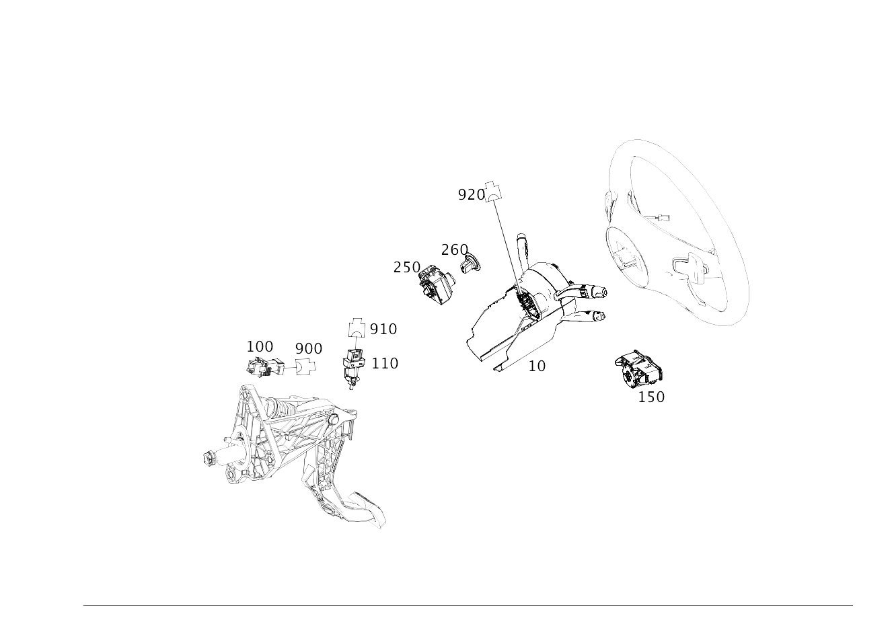

| № | Артикул | Название | Кол. | Примечание | Ограничение |
|---|---|---|---|---|---|
| 10 | A 246 900 55 06 | Блок управления | 1 | БЛОК ПОДРУЛЕВЫХ ПЕРЕКЛЮЧАТЕЛЕЙ N80; VALEO [672] ДЕТАЛЬ ПОСЛЕ УСТАН.ПРОВЕРИТЬ НА АКТУАЛЬНОСТЬ "ПРОШИВНОГО" ПО [004000] ВНИМАНИЕ! УЧИТЫВАТЬ ПРОИЗВОДИТЕЛЯ СНЯТОЙ ДЕТАЛИ. ЗАМЕНА ТОЛЬКО НА МОДУЛЬ РУЛ.КОЛОНКИ С ПОДРУЛ.ПЕРЕКЛЮЧ. ТОГО ЖЕ ПРОИЗВОДИТЕЛЯ. | 802+-(239/476) |
| 10 | A 246 900 56 06 | Блок управления | 1 | БЛОК ПОДРУЛЕВЫХ ПЕРЕКЛЮЧАТЕЛЕЙ N80; VALEO [672] ДЕТАЛЬ ПОСЛЕ УСТАН.ПРОВЕРИТЬ НА АКТУАЛЬНОСТЬ "ПРОШИВНОГО" ПО [004000] ВНИМАНИЕ! УЧИТЫВАТЬ ПРОИЗВОДИТЕЛЯ СНЯТОЙ ДЕТАЛИ. ЗАМЕНА ТОЛЬКО НА МОДУЛЬ РУЛ.КОЛОНКИ С ПОДРУЛ.ПЕРЕКЛЮЧ. ТОГО ЖЕ ПРОИЗВОДИТЕЛЯ. | 440+-(239/476)+802 |
| 10 | A 246 900 58 06 | Блок управления | 1 | БЛОК ПОДРУЛЕВЫХ ПЕРЕКЛЮЧАТЕЛЕЙ N80; VALEO [672] ДЕТАЛЬ ПОСЛЕ УСТАН.ПРОВЕРИТЬ НА АКТУАЛЬНОСТЬ "ПРОШИВНОГО" ПО [004000] ВНИМАНИЕ! УЧИТЫВАТЬ ПРОИЗВОДИТЕЛЯ СНЯТОЙ ДЕТАЛИ. ЗАМЕНА ТОЛЬКО НА МОДУЛЬ РУЛ.КОЛОНКИ С ПОДРУЛ.ПЕРЕКЛЮЧ. ТОГО ЖЕ ПРОИЗВОДИТЕЛЯ. | 429+440+-(239/476)+802 |
| 10 | A 246 900 65 06 | Блок управления | 1 | БЛОК ПОДРУЛЕВЫХ ПЕРЕКЛЮЧАТЕЛЕЙ N80; VALEO [672] ДЕТАЛЬ ПОСЛЕ УСТАН.ПРОВЕРИТЬ НА АКТУАЛЬНОСТЬ "ПРОШИВНОГО" ПО [004000] ВНИМАНИЕ! УЧИТЫВАТЬ ПРОИЗВОДИТЕЛЯ СНЯТОЙ ДЕТАЛИ. ЗАМЕНА ТОЛЬКО НА МОДУЛЬ РУЛ.КОЛОНКИ С ПОДРУЛ.ПЕРЕКЛЮЧ. ТОГО ЖЕ ПРОИЗВОДИТЕЛЯ. | 239+429+-476+802 |
| 10 | A 246 900 83 01 | Блок управления | 1 | БЛОК ПОДРУЛЕВЫХ ПЕРЕКЛЮЧАТЕЛЕЙ N80; KOSTAL [672] ДЕТАЛЬ ПОСЛЕ УСТАН.ПРОВЕРИТЬ НА АКТУАЛЬНОСТЬ "ПРОШИВНОГО" ПО [004000] ВНИМАНИЕ! УЧИТЫВАТЬ ПРОИЗВОДИТЕЛЯ СНЯТОЙ ДЕТАЛИ. ЗАМЕНА ТОЛЬКО НА МОДУЛЬ РУЛ.КОЛОНКИ С ПОДРУЛ.ПЕРЕКЛЮЧ. ТОГО ЖЕ ПРОИЗВОДИТЕЛЯ. | 476+-(239/429)+802 |
| 10 | A 246 900 69 06 | Блок управления | 1 | БЛОК ПОДРУЛЕВЫХ ПЕРЕКЛЮЧАТЕЛЕЙ N80; VALEO [672] ДЕТАЛЬ ПОСЛЕ УСТАН.ПРОВЕРИТЬ НА АКТУАЛЬНОСТЬ "ПРОШИВНОГО" ПО [004000] ВНИМАНИЕ! УЧИТЫВАТЬ ПРОИЗВОДИТЕЛЯ СНЯТОЙ ДЕТАЛИ. ЗАМЕНА ТОЛЬКО НА МОДУЛЬ РУЛ.КОЛОНКИ С ПОДРУЛ.ПЕРЕКЛЮЧ. ТОГО ЖЕ ПРОИЗВОДИТЕЛЯ. | 476+-(239/429)+802 |
| 10 | A 246 900 70 06 | Блок управления | 1 | БЛОК ПОДРУЛЕВЫХ ПЕРЕКЛЮЧАТЕЛЕЙ N80; VALEO [672] ДЕТАЛЬ ПОСЛЕ УСТАН.ПРОВЕРИТЬ НА АКТУАЛЬНОСТЬ "ПРОШИВНОГО" ПО [004000] ВНИМАНИЕ! УЧИТЫВАТЬ ПРОИЗВОДИТЕЛЯ СНЯТОЙ ДЕТАЛИ. ЗАМЕНА ТОЛЬКО НА МОДУЛЬ РУЛ.КОЛОНКИ С ПОДРУЛ.ПЕРЕКЛЮЧ. ТОГО ЖЕ ПРОИЗВОДИТЕЛЯ. | 440+476+-239+802 |
| 10 | A 246 900 71 06 | Блок управления | 1 | БЛОК ПОДРУЛЕВЫХ ПЕРЕКЛЮЧАТЕЛЕЙ N80; VALEO [672] ДЕТАЛЬ ПОСЛЕ УСТАН.ПРОВЕРИТЬ НА АКТУАЛЬНОСТЬ "ПРОШИВНОГО" ПО [004000] ВНИМАНИЕ! УЧИТЫВАТЬ ПРОИЗВОДИТЕЛЯ СНЯТОЙ ДЕТАЛИ. ЗАМЕНА ТОЛЬКО НА МОДУЛЬ РУЛ.КОЛОНКИ С ПОДРУЛ.ПЕРЕКЛЮЧ. ТОГО ЖЕ ПРОИЗВОДИТЕЛЯ. | 476+440+429+-239+802 |
| 10 | A 246 900 79 06 | Блок управления | 1 | Блок подрулевых переключателей N80; VALEO [672] ДЕТАЛЬ ПОСЛЕ УСТАН.ПРОВЕРИТЬ НА АКТУАЛЬНОСТЬ "ПРОШИВНОГО" ПО | 476+239+429+802 |
| 10 | A 246 900 11 11 | Блок управления | 1 | БЛОК ПОДРУЛЕВЫХ ПЕРЕКЛЮЧАТЕЛЕЙ N80; VALEO [672] ДЕТАЛЬ ПОСЛЕ УСТАН.ПРОВЕРИТЬ НА АКТУАЛЬНОСТЬ "ПРОШИВНОГО" ПО [004000] ВНИМАНИЕ! УЧИТЫВАТЬ ПРОИЗВОДИТЕЛЯ СНЯТОЙ ДЕТАЛИ. ЗАМЕНА ТОЛЬКО НА МОДУЛЬ РУЛ.КОЛОНКИ С ПОДРУЛ.ПЕРЕКЛЮЧ. ТОГО ЖЕ ПРОИЗВОДИТЕЛЯ. | (803/804/805/806/807/808/809/800)+440+460+-(239/476) |
| 10 | A 246 900 35 14 | Блок управления (CONTROL UNIT) | 1 | БЛОК ПОДРУЛЕВЫХ ПЕРЕКЛЮЧАТЕЛЕЙ N80; VALEO [672] ДЕТАЛЬ ПОСЛЕ УСТАН.ПРОВЕРИТЬ НА АКТУАЛЬНОСТЬ "ПРОШИВНОГО" ПО [004000] ВНИМАНИЕ! УЧИТЫВАТЬ ПРОИЗВОДИТЕЛЯ СНЯТОЙ ДЕТАЛИ. ЗАМЕНА ТОЛЬКО НА МОДУЛЬ РУЛ.КОЛОНКИ С ПОДРУЛ.ПЕРЕКЛЮЧ. ТОГО ЖЕ ПРОИЗВОДИТЕЛЯ. | (803/804/805/806/807/808/809/800)+440+460+-(239/476) |
| 10 | A 246 900 85 17 | Блок управления (CONTROL UNIT) | 1 | БЛОК ПОДРУЛЕВЫХ ПЕРЕКЛЮЧАТЕЛЕЙ N80; VALEO [672] ДЕТАЛЬ ПОСЛЕ УСТАН.ПРОВЕРИТЬ НА АКТУАЛЬНОСТЬ "ПРОШИВНОГО" ПО [004000] ВНИМАНИЕ! УЧИТЫВАТЬ ПРОИЗВОДИТЕЛЯ СНЯТОЙ ДЕТАЛИ. ЗАМЕНА ТОЛЬКО НА МОДУЛЬ РУЛ.КОЛОНКИ С ПОДРУЛ.ПЕРЕКЛЮЧ. ТОГО ЖЕ ПРОИЗВОДИТЕЛЯ. | (803/804/805/806/807/808/809/800)+440+460+-(239/476) |
| 10 | A 246 900 97 19 | Блок управления | 1 | БЛОК ПОДРУЛЕВЫХ ПЕРЕКЛЮЧАТЕЛЕЙ N80; VALEO [672] ДЕТАЛЬ ПОСЛЕ УСТАН.ПРОВЕРИТЬ НА АКТУАЛЬНОСТЬ "ПРОШИВНОГО" ПО [004000] ВНИМАНИЕ! УЧИТЫВАТЬ ПРОИЗВОДИТЕЛЯ СНЯТОЙ ДЕТАЛИ. ЗАМЕНА ТОЛЬКО НА МОДУЛЬ РУЛ.КОЛОНКИ С ПОДРУЛ.ПЕРЕКЛЮЧ. ТОГО ЖЕ ПРОИЗВОДИТЕЛЯ. | (803/804/805/806/807/808/809/800)+440+460+-(239/476) |
| 10 | A 246 900 35 20 | Блок управления | 1 | БЛОК ПОДРУЛЕВЫХ ПЕРЕКЛЮЧАТЕЛЕЙ N80; VALEO [672] ДЕТАЛЬ ПОСЛЕ УСТАН.ПРОВЕРИТЬ НА АКТУАЛЬНОСТЬ "ПРОШИВНОГО" ПО [004000] ВНИМАНИЕ! УЧИТЫВАТЬ ПРОИЗВОДИТЕЛЯ СНЯТОЙ ДЕТАЛИ. ЗАМЕНА ТОЛЬКО НА МОДУЛЬ РУЛ.КОЛОНКИ С ПОДРУЛ.ПЕРЕКЛЮЧ. ТОГО ЖЕ ПРОИЗВОДИТЕЛЯ. | (803/804/805/806/807/808/809/800)+440+460+-(239/476) |
| 10 | A 246 900 13 11 | Блок управления | 1 | БЛОК ПОДРУЛЕВЫХ ПЕРЕКЛЮЧАТЕЛЕЙ N80; VALEO [672] ДЕТАЛЬ ПОСЛЕ УСТАН.ПРОВЕРИТЬ НА АКТУАЛЬНОСТЬ "ПРОШИВНОГО" ПО [004000] ВНИМАНИЕ! УЧИТЫВАТЬ ПРОИЗВОДИТЕЛЯ СНЯТОЙ ДЕТАЛИ. ЗАМЕНА ТОЛЬКО НА МОДУЛЬ РУЛ.КОЛОНКИ С ПОДРУЛ.ПЕРЕКЛЮЧ. ТОГО ЖЕ ПРОИЗВОДИТЕЛЯ. | (803/804/805/806/807/808/809/800)+440+429+460+-(239/476/M133) |
| 10 | A 246 900 37 14 | Блок управления (CONTROL UNIT) | 1 | БЛОК ПОДРУЛЕВЫХ ПЕРЕКЛЮЧАТЕЛЕЙ N80; VALEO [672] ДЕТАЛЬ ПОСЛЕ УСТАН.ПРОВЕРИТЬ НА АКТУАЛЬНОСТЬ "ПРОШИВНОГО" ПО [004000] ВНИМАНИЕ! УЧИТЫВАТЬ ПРОИЗВОДИТЕЛЯ СНЯТОЙ ДЕТАЛИ. ЗАМЕНА ТОЛЬКО НА МОДУЛЬ РУЛ.КОЛОНКИ С ПОДРУЛ.ПЕРЕКЛЮЧ. ТОГО ЖЕ ПРОИЗВОДИТЕЛЯ. | (803/804/805/806/807/808/809/800)+440+429+460+-(239/476/M133) |
| 10 | A 246 900 90 17 | Блок управления | 1 | БЛОК ПОДРУЛЕВЫХ ПЕРЕКЛЮЧАТЕЛЕЙ N80; VALEO [672] ДЕТАЛЬ ПОСЛЕ УСТАН.ПРОВЕРИТЬ НА АКТУАЛЬНОСТЬ "ПРОШИВНОГО" ПО [004000] ВНИМАНИЕ! УЧИТЫВАТЬ ПРОИЗВОДИТЕЛЯ СНЯТОЙ ДЕТАЛИ. ЗАМЕНА ТОЛЬКО НА МОДУЛЬ РУЛ.КОЛОНКИ С ПОДРУЛ.ПЕРЕКЛЮЧ. ТОГО ЖЕ ПРОИЗВОДИТЕЛЯ. | (803/804/805/806/807/808/809/800)+440+429+460+-(239/476/M133) |
| 10 | A 246 900 02 20 | Блок управления | 1 | БЛОК ПОДРУЛЕВЫХ ПЕРЕКЛЮЧАТЕЛЕЙ N80; VALEO [672] ДЕТАЛЬ ПОСЛЕ УСТАН.ПРОВЕРИТЬ НА АКТУАЛЬНОСТЬ "ПРОШИВНОГО" ПО [004000] ВНИМАНИЕ! УЧИТЫВАТЬ ПРОИЗВОДИТЕЛЯ СНЯТОЙ ДЕТАЛИ. ЗАМЕНА ТОЛЬКО НА МОДУЛЬ РУЛ.КОЛОНКИ С ПОДРУЛ.ПЕРЕКЛЮЧ. ТОГО ЖЕ ПРОИЗВОДИТЕЛЯ. | (803/804/805/806/807/808/809/800)+440+429+460+-(239/476/M133) |
| 10 | A 246 900 40 20 | Блок управления | 1 | БЛОК ПОДРУЛЕВЫХ ПЕРЕКЛЮЧАТЕЛЕЙ N80; VALEO [672] ДЕТАЛЬ ПОСЛЕ УСТАН.ПРОВЕРИТЬ НА АКТУАЛЬНОСТЬ "ПРОШИВНОГО" ПО [004000] ВНИМАНИЕ! УЧИТЫВАТЬ ПРОИЗВОДИТЕЛЯ СНЯТОЙ ДЕТАЛИ. ЗАМЕНА ТОЛЬКО НА МОДУЛЬ РУЛ.КОЛОНКИ С ПОДРУЛ.ПЕРЕКЛЮЧ. ТОГО ЖЕ ПРОИЗВОДИТЕЛЯ. | (803/804/805/806/807/808/809/800)+440+429+460+-(239/476/M133) |
| 10 | A 246 900 09 11 | Блок управления | 1 | Блок подрулевых переключателей N80; VALEO [672] ДЕТАЛЬ ПОСЛЕ УСТАН.ПРОВЕРИТЬ НА АКТУАЛЬНОСТЬ "ПРОШИВНОГО" ПО [004000] ВНИМАНИЕ! УЧИТЫВАТЬ ПРОИЗВОДИТЕЛЯ СНЯТОЙ ДЕТАЛИ. ЗАМЕНА ТОЛЬКО НА МОДУЛЬ РУЛ.КОЛОНКИ С ПОДРУЛ.ПЕРЕКЛЮЧ. ТОГО ЖЕ ПРОИЗВОДИТЕЛЯ. | (803/804/805/806/807/808/809/800)+-(239/429/476/M133) |
| 10 | A 246 900 33 14 | Блок управления (CONTROL UNIT) | 1 | Блок подрулевых переключателей N80; VALEO [672] ДЕТАЛЬ ПОСЛЕ УСТАН.ПРОВЕРИТЬ НА АКТУАЛЬНОСТЬ "ПРОШИВНОГО" ПО [004000] ВНИМАНИЕ! УЧИТЫВАТЬ ПРОИЗВОДИТЕЛЯ СНЯТОЙ ДЕТАЛИ. ЗАМЕНА ТОЛЬКО НА МОДУЛЬ РУЛ.КОЛОНКИ С ПОДРУЛ.ПЕРЕКЛЮЧ. ТОГО ЖЕ ПРОИЗВОДИТЕЛЯ. | (803/804/805/806/807/808/809/800)+-(239/429/476/M133) |
| 10 | A 246 900 83 17 | Блок управления | 1 | Блок подрулевых переключателей N80; VALEO [672] ДЕТАЛЬ ПОСЛЕ УСТАН.ПРОВЕРИТЬ НА АКТУАЛЬНОСТЬ "ПРОШИВНОГО" ПО [004000] ВНИМАНИЕ! УЧИТЫВАТЬ ПРОИЗВОДИТЕЛЯ СНЯТОЙ ДЕТАЛИ. ЗАМЕНА ТОЛЬКО НА МОДУЛЬ РУЛ.КОЛОНКИ С ПОДРУЛ.ПЕРЕКЛЮЧ. ТОГО ЖЕ ПРОИЗВОДИТЕЛЯ. | (803/804/805/806/807/808/809/800)+-(239/429/476/M133) |
| 10 | A 246 900 95 19 | Блок управления | 1 | Блок подрулевых переключателей N80; VALEO [672] ДЕТАЛЬ ПОСЛЕ УСТАН.ПРОВЕРИТЬ НА АКТУАЛЬНОСТЬ "ПРОШИВНОГО" ПО [004000] ВНИМАНИЕ! УЧИТЫВАТЬ ПРОИЗВОДИТЕЛЯ СНЯТОЙ ДЕТАЛИ. ЗАМЕНА ТОЛЬКО НА МОДУЛЬ РУЛ.КОЛОНКИ С ПОДРУЛ.ПЕРЕКЛЮЧ. ТОГО ЖЕ ПРОИЗВОДИТЕЛЯ. | (803/804/805/806/807/808/809/800)+-(239/429/476/M133) |
| 10 | A 246 900 33 20 | Блок управления | 1 | Блок подрулевых переключателей N80; VALEO [672] ДЕТАЛЬ ПОСЛЕ УСТАН.ПРОВЕРИТЬ НА АКТУАЛЬНОСТЬ "ПРОШИВНОГО" ПО [004000] ВНИМАНИЕ! УЧИТЫВАТЬ ПРОИЗВОДИТЕЛЯ СНЯТОЙ ДЕТАЛИ. ЗАМЕНА ТОЛЬКО НА МОДУЛЬ РУЛ.КОЛОНКИ С ПОДРУЛ.ПЕРЕКЛЮЧ. ТОГО ЖЕ ПРОИЗВОДИТЕЛЯ. | (803/804/805/806/807/808/809/800)+-(239/429/476/M133) |
| 10 | A 246 900 55 06 | Блок управления | 1 | Блок подрулевых переключателей N80; VALEO [672] ДЕТАЛЬ ПОСЛЕ УСТАН.ПРОВЕРИТЬ НА АКТУАЛЬНОСТЬ "ПРОШИВНОГО" ПО [004000] ВНИМАНИЕ! УЧИТЫВАТЬ ПРОИЗВОДИТЕЛЯ СНЯТОЙ ДЕТАЛИ. ЗАМЕНА ТОЛЬКО НА МОДУЛЬ РУЛ.КОЛОНКИ С ПОДРУЛ.ПЕРЕКЛЮЧ. ТОГО ЖЕ ПРОИЗВОДИТЕЛЯ. | (803/804/805/806/807/808/809/800)+-(239/429/476/M133) |
| 10 | A 246 900 39 08 | Блок управления | 1 | Блок подрулевых переключателей N80; VALEO [672] ДЕТАЛЬ ПОСЛЕ УСТАН.ПРОВЕРИТЬ НА АКТУАЛЬНОСТЬ "ПРОШИВНОГО" ПО [004000] ВНИМАНИЕ! УЧИТЫВАТЬ ПРОИЗВОДИТЕЛЯ СНЯТОЙ ДЕТАЛИ. ЗАМЕНА ТОЛЬКО НА МОДУЛЬ РУЛ.КОЛОНКИ С ПОДРУЛ.ПЕРЕКЛЮЧ. ТОГО ЖЕ ПРОИЗВОДИТЕЛЯ. | (803/804/805/806/807/808/809/800)+-(239/429/476/M133) |
| 10 | A 246 900 10 11 | Блок управления | 1 | Блок подрулевых переключателей N80; VALEO [672] ДЕТАЛЬ ПОСЛЕ УСТАН.ПРОВЕРИТЬ НА АКТУАЛЬНОСТЬ "ПРОШИВНОГО" ПО [004000] ВНИМАНИЕ! УЧИТЫВАТЬ ПРОИЗВОДИТЕЛЯ СНЯТОЙ ДЕТАЛИ. ЗАМЕНА ТОЛЬКО НА МОДУЛЬ РУЛ.КОЛОНКИ С ПОДРУЛ.ПЕРЕКЛЮЧ. ТОГО ЖЕ ПРОИЗВОДИТЕЛЯ. | (803/804/805/806/807/808/809/800)+440+-(239/476/M133) |
| 10 | A 246 900 34 14 | Блок управления (CONTROL UNIT) | 1 | Блок подрулевых переключателей N80; VALEO [672] ДЕТАЛЬ ПОСЛЕ УСТАН.ПРОВЕРИТЬ НА АКТУАЛЬНОСТЬ "ПРОШИВНОГО" ПО [004000] ВНИМАНИЕ! УЧИТЫВАТЬ ПРОИЗВОДИТЕЛЯ СНЯТОЙ ДЕТАЛИ. ЗАМЕНА ТОЛЬКО НА МОДУЛЬ РУЛ.КОЛОНКИ С ПОДРУЛ.ПЕРЕКЛЮЧ. ТОГО ЖЕ ПРОИЗВОДИТЕЛЯ. | (803/804/805/806/807/808/809/800)+440+-(239/476/M133) |
| 10 | A 246 900 84 17 | Блок управления | 1 | Блок подрулевых переключателей N80; VALEO [672] ДЕТАЛЬ ПОСЛЕ УСТАН.ПРОВЕРИТЬ НА АКТУАЛЬНОСТЬ "ПРОШИВНОГО" ПО [004000] ВНИМАНИЕ! УЧИТЫВАТЬ ПРОИЗВОДИТЕЛЯ СНЯТОЙ ДЕТАЛИ. ЗАМЕНА ТОЛЬКО НА МОДУЛЬ РУЛ.КОЛОНКИ С ПОДРУЛ.ПЕРЕКЛЮЧ. ТОГО ЖЕ ПРОИЗВОДИТЕЛЯ. | (803/804/805/806/807/808/809/800)+440+-(239/476/M133) |
| 10 | A 246 900 96 19 | Блок управления (CONTROL UNIT) | 1 | Блок подрулевых переключателей N80; VALEO [672] ДЕТАЛЬ ПОСЛЕ УСТАН.ПРОВЕРИТЬ НА АКТУАЛЬНОСТЬ "ПРОШИВНОГО" ПО [004000] ВНИМАНИЕ! УЧИТЫВАТЬ ПРОИЗВОДИТЕЛЯ СНЯТОЙ ДЕТАЛИ. ЗАМЕНА ТОЛЬКО НА МОДУЛЬ РУЛ.КОЛОНКИ С ПОДРУЛ.ПЕРЕКЛЮЧ. ТОГО ЖЕ ПРОИЗВОДИТЕЛЯ. | (803/804/805/806/807/808/809/800)+440+-(239/476/M133) |
| 10 | A 246 900 34 20 | Блок управления | 1 | Блок подрулевых переключателей N80; VALEO [672] ДЕТАЛЬ ПОСЛЕ УСТАН.ПРОВЕРИТЬ НА АКТУАЛЬНОСТЬ "ПРОШИВНОГО" ПО [004000] ВНИМАНИЕ! УЧИТЫВАТЬ ПРОИЗВОДИТЕЛЯ СНЯТОЙ ДЕТАЛИ. ЗАМЕНА ТОЛЬКО НА МОДУЛЬ РУЛ.КОЛОНКИ С ПОДРУЛ.ПЕРЕКЛЮЧ. ТОГО ЖЕ ПРОИЗВОДИТЕЛЯ. | (803/804/805/806/807/808/809/800)+440+-(239/476/M133) |
| 10 | A 246 900 56 06 | Блок управления | 1 | Блок подрулевых переключателей N80; VALEO [672] ДЕТАЛЬ ПОСЛЕ УСТАН.ПРОВЕРИТЬ НА АКТУАЛЬНОСТЬ "ПРОШИВНОГО" ПО [004000] ВНИМАНИЕ! УЧИТЫВАТЬ ПРОИЗВОДИТЕЛЯ СНЯТОЙ ДЕТАЛИ. ЗАМЕНА ТОЛЬКО НА МОДУЛЬ РУЛ.КОЛОНКИ С ПОДРУЛ.ПЕРЕКЛЮЧ. ТОГО ЖЕ ПРОИЗВОДИТЕЛЯ. | (803/804/805/806/807/808/809/800)+440+-(239/476/M133) |
| 10 | A 246 900 40 08 | Блок управления | 1 | Блок подрулевых переключателей N80; VALEO [672] ДЕТАЛЬ ПОСЛЕ УСТАН.ПРОВЕРИТЬ НА АКТУАЛЬНОСТЬ "ПРОШИВНОГО" ПО [004000] ВНИМАНИЕ! УЧИТЫВАТЬ ПРОИЗВОДИТЕЛЯ СНЯТОЙ ДЕТАЛИ. ЗАМЕНА ТОЛЬКО НА МОДУЛЬ РУЛ.КОЛОНКИ С ПОДРУЛ.ПЕРЕКЛЮЧ. ТОГО ЖЕ ПРОИЗВОДИТЕЛЯ. | (803/804/805/806/807/808/809/800)+440+-(239/476/M133) |
| 10 | A 246 900 83 03 | Блок управления | 1 | БЛОК ПОДРУЛЕВЫХ ПЕРЕКЛЮЧАТЕЛЕЙ N80; KOSTAL [672] ДЕТАЛЬ ПОСЛЕ УСТАН.ПРОВЕРИТЬ НА АКТУАЛЬНОСТЬ "ПРОШИВНОГО" ПО [004000] ВНИМАНИЕ! УЧИТЫВАТЬ ПРОИЗВОДИТЕЛЯ СНЯТОЙ ДЕТАЛИ. ЗАМЕНА ТОЛЬКО НА МОДУЛЬ РУЛ.КОЛОНКИ С ПОДРУЛ.ПЕРЕКЛЮЧ. ТОГО ЖЕ ПРОИЗВОДИТЕЛЯ. | 803+440+429+-(239/476/M133) |
| 10 | A 246 900 42 08 | Блок управления | 1 | Блок подрулевых переключателей N80; VALEO [672] ДЕТАЛЬ ПОСЛЕ УСТАН.ПРОВЕРИТЬ НА АКТУАЛЬНОСТЬ "ПРОШИВНОГО" ПО [004000] ВНИМАНИЕ! УЧИТЫВАТЬ ПРОИЗВОДИТЕЛЯ СНЯТОЙ ДЕТАЛИ. ЗАМЕНА ТОЛЬКО НА МОДУЛЬ РУЛ.КОЛОНКИ С ПОДРУЛ.ПЕРЕКЛЮЧ. ТОГО ЖЕ ПРОИЗВОДИТЕЛЯ. | 803+440+429+-(239/476/M133) |
| 10 | A 246 900 12 11 | Блок управления | 1 | Блок подрулевых переключателей N80; VALEO [672] ДЕТАЛЬ ПОСЛЕ УСТАН.ПРОВЕРИТЬ НА АКТУАЛЬНОСТЬ "ПРОШИВНОГО" ПО [004000] ВНИМАНИЕ! УЧИТЫВАТЬ ПРОИЗВОДИТЕЛЯ СНЯТОЙ ДЕТАЛИ. ЗАМЕНА ТОЛЬКО НА МОДУЛЬ РУЛ.КОЛОНКИ С ПОДРУЛ.ПЕРЕКЛЮЧ. ТОГО ЖЕ ПРОИЗВОДИТЕЛЯ. | (803/804/805/806/807/808/809/800)+440+429+-(239/476/M133) |
| 10 | A 246 900 36 14 | Блок управления (CONTROL UNIT) | 1 | Блок подрулевых переключателей N80; VALEO [672] ДЕТАЛЬ ПОСЛЕ УСТАН.ПРОВЕРИТЬ НА АКТУАЛЬНОСТЬ "ПРОШИВНОГО" ПО [004000] ВНИМАНИЕ! УЧИТЫВАТЬ ПРОИЗВОДИТЕЛЯ СНЯТОЙ ДЕТАЛИ. ЗАМЕНА ТОЛЬКО НА МОДУЛЬ РУЛ.КОЛОНКИ С ПОДРУЛ.ПЕРЕКЛЮЧ. ТОГО ЖЕ ПРОИЗВОДИТЕЛЯ. | (803/804/805/806/807/808/809/800)+440+429+-(239/476/M133) |
| 10 | A 246 900 89 17 | Блок управления (CONTROL UNIT) | 1 | Блок подрулевых переключателей N80; VALEO [672] ДЕТАЛЬ ПОСЛЕ УСТАН.ПРОВЕРИТЬ НА АКТУАЛЬНОСТЬ "ПРОШИВНОГО" ПО [004000] ВНИМАНИЕ! УЧИТЫВАТЬ ПРОИЗВОДИТЕЛЯ СНЯТОЙ ДЕТАЛИ. ЗАМЕНА ТОЛЬКО НА МОДУЛЬ РУЛ.КОЛОНКИ С ПОДРУЛ.ПЕРЕКЛЮЧ. ТОГО ЖЕ ПРОИЗВОДИТЕЛЯ. | (803/804/805/806/807/808/809/800)+440+429+-(239/476/M133) |
| 10 | A 246 900 01 20 | Блок управления (CONTROL UNIT) | 1 | Блок подрулевых переключателей N80; VALEO [672] ДЕТАЛЬ ПОСЛЕ УСТАН.ПРОВЕРИТЬ НА АКТУАЛЬНОСТЬ "ПРОШИВНОГО" ПО [004000] ВНИМАНИЕ! УЧИТЫВАТЬ ПРОИЗВОДИТЕЛЯ СНЯТОЙ ДЕТАЛИ. ЗАМЕНА ТОЛЬКО НА МОДУЛЬ РУЛ.КОЛОНКИ С ПОДРУЛ.ПЕРЕКЛЮЧ. ТОГО ЖЕ ПРОИЗВОДИТЕЛЯ. | (803/804/805/806/807/808/809/800)+440+429+-(239/476/M133) |
| 10 | A 246 900 39 20 | Блок управления | 1 | Блок подрулевых переключателей N80; VALEO [672] ДЕТАЛЬ ПОСЛЕ УСТАН.ПРОВЕРИТЬ НА АКТУАЛЬНОСТЬ "ПРОШИВНОГО" ПО [004000] ВНИМАНИЕ! УЧИТЫВАТЬ ПРОИЗВОДИТЕЛЯ СНЯТОЙ ДЕТАЛИ. ЗАМЕНА ТОЛЬКО НА МОДУЛЬ РУЛ.КОЛОНКИ С ПОДРУЛ.ПЕРЕКЛЮЧ. ТОГО ЖЕ ПРОИЗВОДИТЕЛЯ. | (803/804/805/806/807/808/809/800)+440+429+-(239/476/M133) |
| 10 | A 246 900 50 08 | Блок управления | 1 | БЛОК ПОДРУЛЕВЫХ ПЕРЕКЛЮЧАТЕЛЕЙ N80; VALEO [672] ДЕТАЛЬ ПОСЛЕ УСТАН.ПРОВЕРИТЬ НА АКТУАЛЬНОСТЬ "ПРОШИВНОГО" ПО [004000] ВНИМАНИЕ! УЧИТЫВАТЬ ПРОИЗВОДИТЕЛЯ СНЯТОЙ ДЕТАЛИ. ЗАМЕНА ТОЛЬКО НА МОДУЛЬ РУЛ.КОЛОНКИ С ПОДРУЛ.ПЕРЕКЛЮЧ. ТОГО ЖЕ ПРОИЗВОДИТЕЛЯ. | 239+429+460+(803/804/805+-055)+-(476/M133) |
| 10 | A 246 900 20 11 | Блок управления | 1 | БЛОК ПОДРУЛЕВЫХ ПЕРЕКЛЮЧАТЕЛЕЙ N80; VALEO [672] ДЕТАЛЬ ПОСЛЕ УСТАН.ПРОВЕРИТЬ НА АКТУАЛЬНОСТЬ "ПРОШИВНОГО" ПО [004000] ВНИМАНИЕ! УЧИТЫВАТЬ ПРОИЗВОДИТЕЛЯ СНЯТОЙ ДЕТАЛИ. ЗАМЕНА ТОЛЬКО НА МОДУЛЬ РУЛ.КОЛОНКИ С ПОДРУЛ.ПЕРЕКЛЮЧ. ТОГО ЖЕ ПРОИЗВОДИТЕЛЯ. | 239+429+460+(803/804/805+-055)+-(476/M133) |
| 10 | A 246 900 44 14 | Блок управления (CONTROL UNIT) | 1 | БЛОК ПОДРУЛЕВЫХ ПЕРЕКЛЮЧАТЕЛЕЙ N80; VALEO [672] ДЕТАЛЬ ПОСЛЕ УСТАН.ПРОВЕРИТЬ НА АКТУАЛЬНОСТЬ "ПРОШИВНОГО" ПО [004000] ВНИМАНИЕ! УЧИТЫВАТЬ ПРОИЗВОДИТЕЛЯ СНЯТОЙ ДЕТАЛИ. ЗАМЕНА ТОЛЬКО НА МОДУЛЬ РУЛ.КОЛОНКИ С ПОДРУЛ.ПЕРЕКЛЮЧ. ТОГО ЖЕ ПРОИЗВОДИТЕЛЯ. | 239+429+460+(803/804/805+-055)+-(476/M133) |
| 10 | A 246 900 99 17 | Блок управления | 1 | БЛОК ПОДРУЛЕВЫХ ПЕРЕКЛЮЧАТЕЛЕЙ N80; VALEO [672] ДЕТАЛЬ ПОСЛЕ УСТАН.ПРОВЕРИТЬ НА АКТУАЛЬНОСТЬ "ПРОШИВНОГО" ПО [004000] ВНИМАНИЕ! УЧИТЫВАТЬ ПРОИЗВОДИТЕЛЯ СНЯТОЙ ДЕТАЛИ. ЗАМЕНА ТОЛЬКО НА МОДУЛЬ РУЛ.КОЛОНКИ С ПОДРУЛ.ПЕРЕКЛЮЧ. ТОГО ЖЕ ПРОИЗВОДИТЕЛЯ. | 239+429+460+(803/804/805+-055)+-(476/M133) |
| 10 | A 246 900 11 20 | Блок управления | 1 | БЛОК ПОДРУЛЕВЫХ ПЕРЕКЛЮЧАТЕЛЕЙ N80; VALEO [672] ДЕТАЛЬ ПОСЛЕ УСТАН.ПРОВЕРИТЬ НА АКТУАЛЬНОСТЬ "ПРОШИВНОГО" ПО [004000] ВНИМАНИЕ! УЧИТЫВАТЬ ПРОИЗВОДИТЕЛЯ СНЯТОЙ ДЕТАЛИ. ЗАМЕНА ТОЛЬКО НА МОДУЛЬ РУЛ.КОЛОНКИ С ПОДРУЛ.ПЕРЕКЛЮЧ. ТОГО ЖЕ ПРОИЗВОДИТЕЛЯ. | 239+429+460+(803/804/805+-055)+-(476/M133) |
| 10 | A 246 900 49 20 | Блок управления | 1 | БЛОК ПОДРУЛЕВЫХ ПЕРЕКЛЮЧАТЕЛЕЙ N80; VALEO [672] ДЕТАЛЬ ПОСЛЕ УСТАН.ПРОВЕРИТЬ НА АКТУАЛЬНОСТЬ "ПРОШИВНОГО" ПО [004000] ВНИМАНИЕ! УЧИТЫВАТЬ ПРОИЗВОДИТЕЛЯ СНЯТОЙ ДЕТАЛИ. ЗАМЕНА ТОЛЬКО НА МОДУЛЬ РУЛ.КОЛОНКИ С ПОДРУЛ.ПЕРЕКЛЮЧ. ТОГО ЖЕ ПРОИЗВОДИТЕЛЯ. | 239+429+460+(803/804/805+-055)+-(476/M133) |
| 10 | A 246 900 19 11 | Блок управления | 1 | Блок подрулевых переключателей N80; VALEO [672] ДЕТАЛЬ ПОСЛЕ УСТАН.ПРОВЕРИТЬ НА АКТУАЛЬНОСТЬ "ПРОШИВНОГО" ПО [004000] ВНИМАНИЕ! УЧИТЫВАТЬ ПРОИЗВОДИТЕЛЯ СНЯТОЙ ДЕТАЛИ. ЗАМЕНА ТОЛЬКО НА МОДУЛЬ РУЛ.КОЛОНКИ С ПОДРУЛ.ПЕРЕКЛЮЧ. ТОГО ЖЕ ПРОИЗВОДИТЕЛЯ. | (803/804/805+-055)+239+429+-(476/M133) |
| 10 | A 246 900 43 14 | Блок управления (CONTROL UNIT) | 1 | Блок подрулевых переключателей N80; VALEO [672] ДЕТАЛЬ ПОСЛЕ УСТАН.ПРОВЕРИТЬ НА АКТУАЛЬНОСТЬ "ПРОШИВНОГО" ПО [004000] ВНИМАНИЕ! УЧИТЫВАТЬ ПРОИЗВОДИТЕЛЯ СНЯТОЙ ДЕТАЛИ. ЗАМЕНА ТОЛЬКО НА МОДУЛЬ РУЛ.КОЛОНКИ С ПОДРУЛ.ПЕРЕКЛЮЧ. ТОГО ЖЕ ПРОИЗВОДИТЕЛЯ. | (803/804/805/806/807/808/809/800)+239+429+-(476/M133) |
| 10 | A 246 900 95 17 | Блок управления | 1 | Блок подрулевых переключателей N80; VALEO [672] ДЕТАЛЬ ПОСЛЕ УСТАН.ПРОВЕРИТЬ НА АКТУАЛЬНОСТЬ "ПРОШИВНОГО" ПО [004000] ВНИМАНИЕ! УЧИТЫВАТЬ ПРОИЗВОДИТЕЛЯ СНЯТОЙ ДЕТАЛИ. ЗАМЕНА ТОЛЬКО НА МОДУЛЬ РУЛ.КОЛОНКИ С ПОДРУЛ.ПЕРЕКЛЮЧ. ТОГО ЖЕ ПРОИЗВОДИТЕЛЯ. | (803/804/805/806/807/808/809/800)+239+429+-(476/M133) |
| 10 | A 246 900 07 20 | Блок управления | 1 | Блок подрулевых переключателей N80; VALEO [672] ДЕТАЛЬ ПОСЛЕ УСТАН.ПРОВЕРИТЬ НА АКТУАЛЬНОСТЬ "ПРОШИВНОГО" ПО [004000] ВНИМАНИЕ! УЧИТЫВАТЬ ПРОИЗВОДИТЕЛЯ СНЯТОЙ ДЕТАЛИ. ЗАМЕНА ТОЛЬКО НА МОДУЛЬ РУЛ.КОЛОНКИ С ПОДРУЛ.ПЕРЕКЛЮЧ. ТОГО ЖЕ ПРОИЗВОДИТЕЛЯ. | (803/804/805/806/807/808/809/800)+239+429+-(476/M133) |
| 10 | A 246 900 45 20 | Блок управления | 1 | Блок подрулевых переключателей N80; VALEO [672] ДЕТАЛЬ ПОСЛЕ УСТАН.ПРОВЕРИТЬ НА АКТУАЛЬНОСТЬ "ПРОШИВНОГО" ПО [004000] ВНИМАНИЕ! УЧИТЫВАТЬ ПРОИЗВОДИТЕЛЯ СНЯТОЙ ДЕТАЛИ. ЗАМЕНА ТОЛЬКО НА МОДУЛЬ РУЛ.КОЛОНКИ С ПОДРУЛ.ПЕРЕКЛЮЧ. ТОГО ЖЕ ПРОИЗВОДИТЕЛЯ. | (803/804/805/806/807/808/809/800)+239+429+-(476/M133) |
| 10 | A 246 900 93 03 | Блок управления | 1 | Блок подрулевых переключателей N80; KOSTAL [672] ДЕТАЛЬ ПОСЛЕ УСТАН.ПРОВЕРИТЬ НА АКТУАЛЬНОСТЬ "ПРОШИВНОГО" ПО [004000] ВНИМАНИЕ! УЧИТЫВАТЬ ПРОИЗВОДИТЕЛЯ СНЯТОЙ ДЕТАЛИ. ЗАМЕНА ТОЛЬКО НА МОДУЛЬ РУЛ.КОЛОНКИ С ПОДРУЛ.ПЕРЕКЛЮЧ. ТОГО ЖЕ ПРОИЗВОДИТЕЛЯ. | 803+239+429+-(476/M133) |
| 10 | A 246 900 49 08 | Блок управления | 1 | Блок подрулевых переключателей N80; VALEO [672] ДЕТАЛЬ ПОСЛЕ УСТАН.ПРОВЕРИТЬ НА АКТУАЛЬНОСТЬ "ПРОШИВНОГО" ПО [004000] ВНИМАНИЕ! УЧИТЫВАТЬ ПРОИЗВОДИТЕЛЯ СНЯТОЙ ДЕТАЛИ. ЗАМЕНА ТОЛЬКО НА МОДУЛЬ РУЛ.КОЛОНКИ С ПОДРУЛ.ПЕРЕКЛЮЧ. ТОГО ЖЕ ПРОИЗВОДИТЕЛЯ. | 803+239+429+-(476/M133) |
| 10 | A 246 900 23 11 | Блок управления | 1 | Блок подрулевых переключателей N80; VALEO [672] ДЕТАЛЬ ПОСЛЕ УСТАН.ПРОВЕРИТЬ НА АКТУАЛЬНОСТЬ "ПРОШИВНОГО" ПО [004000] ВНИМАНИЕ! УЧИТЫВАТЬ ПРОИЗВОДИТЕЛЯ СНЯТОЙ ДЕТАЛИ. ЗАМЕНА ТОЛЬКО НА МОДУЛЬ РУЛ.КОЛОНКИ С ПОДРУЛ.ПЕРЕКЛЮЧ. ТОГО ЖЕ ПРОИЗВОДИТЕЛЯ. | (803/804/805/806/807/808/809/800)+476+-(239/429/M133) |
| 10 | A 246 900 47 14 | Блок управления | 1 | Блок подрулевых переключателей N80; VALEO [672] ДЕТАЛЬ ПОСЛЕ УСТАН.ПРОВЕРИТЬ НА АКТУАЛЬНОСТЬ "ПРОШИВНОГО" ПО [004000] ВНИМАНИЕ! УЧИТЫВАТЬ ПРОИЗВОДИТЕЛЯ СНЯТОЙ ДЕТАЛИ. ЗАМЕНА ТОЛЬКО НА МОДУЛЬ РУЛ.КОЛОНКИ С ПОДРУЛ.ПЕРЕКЛЮЧ. ТОГО ЖЕ ПРОИЗВОДИТЕЛЯ. | (803/804/805/806/807/808/809/800)+476+-(239/429/M133) |
| 10 | A 246 900 01 18 | Блок управления | 1 | Блок подрулевых переключателей N80; VALEO [672] ДЕТАЛЬ ПОСЛЕ УСТАН.ПРОВЕРИТЬ НА АКТУАЛЬНОСТЬ "ПРОШИВНОГО" ПО [004000] ВНИМАНИЕ! УЧИТЫВАТЬ ПРОИЗВОДИТЕЛЯ СНЯТОЙ ДЕТАЛИ. ЗАМЕНА ТОЛЬКО НА МОДУЛЬ РУЛ.КОЛОНКИ С ПОДРУЛ.ПЕРЕКЛЮЧ. ТОГО ЖЕ ПРОИЗВОДИТЕЛЯ. | (803/804/805/806/807/808/809/800)+476+-(239/429/M133) |
| 10 | A 246 900 13 20 | Блок управления | 1 | Блок подрулевых переключателей N80; VALEO [672] ДЕТАЛЬ ПОСЛЕ УСТАН.ПРОВЕРИТЬ НА АКТУАЛЬНОСТЬ "ПРОШИВНОГО" ПО [004000] ВНИМАНИЕ! УЧИТЫВАТЬ ПРОИЗВОДИТЕЛЯ СНЯТОЙ ДЕТАЛИ. ЗАМЕНА ТОЛЬКО НА МОДУЛЬ РУЛ.КОЛОНКИ С ПОДРУЛ.ПЕРЕКЛЮЧ. ТОГО ЖЕ ПРОИЗВОДИТЕЛЯ. | (803/804/805/806/807/808/809/800)+476+-(239/429/M133) |
| 10 | A 246 900 51 20 | Блок управления | 1 | Блок подрулевых переключателей N80; VALEO [672] ДЕТАЛЬ ПОСЛЕ УСТАН.ПРОВЕРИТЬ НА АКТУАЛЬНОСТЬ "ПРОШИВНОГО" ПО [004000] ВНИМАНИЕ! УЧИТЫВАТЬ ПРОИЗВОДИТЕЛЯ СНЯТОЙ ДЕТАЛИ. ЗАМЕНА ТОЛЬКО НА МОДУЛЬ РУЛ.КОЛОНКИ С ПОДРУЛ.ПЕРЕКЛЮЧ. ТОГО ЖЕ ПРОИЗВОДИТЕЛЯ. | (803/804/805/806/807/808/809/800)+476+-(239/429/M133) |
| 10 | A 246 900 24 11 | Блок управления | 1 | Блок подрулевых переключателей N80; VALEO [672] ДЕТАЛЬ ПОСЛЕ УСТАН.ПРОВЕРИТЬ НА АКТУАЛЬНОСТЬ "ПРОШИВНОГО" ПО [004000] ВНИМАНИЕ! УЧИТЫВАТЬ ПРОИЗВОДИТЕЛЯ СНЯТОЙ ДЕТАЛИ. ЗАМЕНА ТОЛЬКО НА МОДУЛЬ РУЛ.КОЛОНКИ С ПОДРУЛ.ПЕРЕКЛЮЧ. ТОГО ЖЕ ПРОИЗВОДИТЕЛЯ. | (803/804/805/806/807/808/809/800)+476+440+-(239/M133) |
| 10 | A 246 900 48 14 | Блок управления (CONTROL UNIT) | 1 | Блок подрулевых переключателей N80; VALEO [672] ДЕТАЛЬ ПОСЛЕ УСТАН.ПРОВЕРИТЬ НА АКТУАЛЬНОСТЬ "ПРОШИВНОГО" ПО [004000] ВНИМАНИЕ! УЧИТЫВАТЬ ПРОИЗВОДИТЕЛЯ СНЯТОЙ ДЕТАЛИ. ЗАМЕНА ТОЛЬКО НА МОДУЛЬ РУЛ.КОЛОНКИ С ПОДРУЛ.ПЕРЕКЛЮЧ. ТОГО ЖЕ ПРОИЗВОДИТЕЛЯ. | (803/804/805/806/807/808/809/800)+476+440+-(239/M133) |
| 10 | A 246 900 02 18 | Блок управления | 1 | Блок подрулевых переключателей N80; VALEO [672] ДЕТАЛЬ ПОСЛЕ УСТАН.ПРОВЕРИТЬ НА АКТУАЛЬНОСТЬ "ПРОШИВНОГО" ПО [004000] ВНИМАНИЕ! УЧИТЫВАТЬ ПРОИЗВОДИТЕЛЯ СНЯТОЙ ДЕТАЛИ. ЗАМЕНА ТОЛЬКО НА МОДУЛЬ РУЛ.КОЛОНКИ С ПОДРУЛ.ПЕРЕКЛЮЧ. ТОГО ЖЕ ПРОИЗВОДИТЕЛЯ. | (803/804/805/806/807/808/809/800)+476+440+-(239/M133) |
| 10 | A 246 900 14 20 | Блок управления | 1 | Блок подрулевых переключателей N80; VALEO [672] ДЕТАЛЬ ПОСЛЕ УСТАН.ПРОВЕРИТЬ НА АКТУАЛЬНОСТЬ "ПРОШИВНОГО" ПО [004000] ВНИМАНИЕ! УЧИТЫВАТЬ ПРОИЗВОДИТЕЛЯ СНЯТОЙ ДЕТАЛИ. ЗАМЕНА ТОЛЬКО НА МОДУЛЬ РУЛ.КОЛОНКИ С ПОДРУЛ.ПЕРЕКЛЮЧ. ТОГО ЖЕ ПРОИЗВОДИТЕЛЯ. | (803/804/805/806/807/808/809/800)+476+440+-(239/M133) |
| 10 | A 246 900 52 20 | Блок управления | 1 | Блок подрулевых переключателей N80; VALEO [672] ДЕТАЛЬ ПОСЛЕ УСТАН.ПРОВЕРИТЬ НА АКТУАЛЬНОСТЬ "ПРОШИВНОГО" ПО [004000] ВНИМАНИЕ! УЧИТЫВАТЬ ПРОИЗВОДИТЕЛЯ СНЯТОЙ ДЕТАЛИ. ЗАМЕНА ТОЛЬКО НА МОДУЛЬ РУЛ.КОЛОНКИ С ПОДРУЛ.ПЕРЕКЛЮЧ. ТОГО ЖЕ ПРОИЗВОДИТЕЛЯ. | (803/804/805/806/807/808/809/800)+476+440+-(239/M133) |
| 10 | A 246 900 97 03 | Блок управления | 1 | Блок подрулевых переключателей N80; KOSTAL [672] ДЕТАЛЬ ПОСЛЕ УСТАН.ПРОВЕРИТЬ НА АКТУАЛЬНОСТЬ "ПРОШИВНОГО" ПО [004000] ВНИМАНИЕ! УЧИТЫВАТЬ ПРОИЗВОДИТЕЛЯ СНЯТОЙ ДЕТАЛИ. ЗАМЕНА ТОЛЬКО НА МОДУЛЬ РУЛ.КОЛОНКИ С ПОДРУЛ.ПЕРЕКЛЮЧ. ТОГО ЖЕ ПРОИЗВОДИТЕЛЯ. | 803+476+440+-(239/M133) |
| 10 | A 246 900 44 06 | Блок управления | 1 | Блок подрулевых переключателей N80; KOSTAL [672] ДЕТАЛЬ ПОСЛЕ УСТАН.ПРОВЕРИТЬ НА АКТУАЛЬНОСТЬ "ПРОШИВНОГО" ПО [004000] ВНИМАНИЕ! УЧИТЫВАТЬ ПРОИЗВОДИТЕЛЯ СНЯТОЙ ДЕТАЛИ. ЗАМЕНА ТОЛЬКО НА МОДУЛЬ РУЛ.КОЛОНКИ С ПОДРУЛ.ПЕРЕКЛЮЧ. ТОГО ЖЕ ПРОИЗВОДИТЕЛЯ. | 803+476+440+-(239/M133) |
| 10 | A 246 900 25 11 | Блок управления | 1 | Блок подрулевых переключателей N80; VALEO [672] ДЕТАЛЬ ПОСЛЕ УСТАН.ПРОВЕРИТЬ НА АКТУАЛЬНОСТЬ "ПРОШИВНОГО" ПО [004000] ВНИМАНИЕ! УЧИТЫВАТЬ ПРОИЗВОДИТЕЛЯ СНЯТОЙ ДЕТАЛИ. ЗАМЕНА ТОЛЬКО НА МОДУЛЬ РУЛ.КОЛОНКИ С ПОДРУЛ.ПЕРЕКЛЮЧ. ТОГО ЖЕ ПРОИЗВОДИТЕЛЯ. | (803/804/805/806/807/808/809/800)+476+440+429+-(239/M133) |
| 10 | A 246 900 49 14 | Блок управления | 1 | Блок подрулевых переключателей N80; VALEO [672] ДЕТАЛЬ ПОСЛЕ УСТАН.ПРОВЕРИТЬ НА АКТУАЛЬНОСТЬ "ПРОШИВНОГО" ПО [004000] ВНИМАНИЕ! УЧИТЫВАТЬ ПРОИЗВОДИТЕЛЯ СНЯТОЙ ДЕТАЛИ. ЗАМЕНА ТОЛЬКО НА МОДУЛЬ РУЛ.КОЛОНКИ С ПОДРУЛ.ПЕРЕКЛЮЧ. ТОГО ЖЕ ПРОИЗВОДИТЕЛЯ. | (803/804/805/806/807/808/809/800)+476+440+429+-(239/M133) |
| 10 | A 246 900 07 18 | Блок управления | 1 | Блок подрулевых переключателей N80; VALEO [672] ДЕТАЛЬ ПОСЛЕ УСТАН.ПРОВЕРИТЬ НА АКТУАЛЬНОСТЬ "ПРОШИВНОГО" ПО [004000] ВНИМАНИЕ! УЧИТЫВАТЬ ПРОИЗВОДИТЕЛЯ СНЯТОЙ ДЕТАЛИ. ЗАМЕНА ТОЛЬКО НА МОДУЛЬ РУЛ.КОЛОНКИ С ПОДРУЛ.ПЕРЕКЛЮЧ. ТОГО ЖЕ ПРОИЗВОДИТЕЛЯ. | (803/804/805/806/807/808/809/800)+476+440+429+-(239/M133) |
| 10 | A 246 900 19 20 | Блок управления (CONTROL UNIT) | 1 | Блок подрулевых переключателей N80; VALEO [672] ДЕТАЛЬ ПОСЛЕ УСТАН.ПРОВЕРИТЬ НА АКТУАЛЬНОСТЬ "ПРОШИВНОГО" ПО [004000] ВНИМАНИЕ! УЧИТЫВАТЬ ПРОИЗВОДИТЕЛЯ СНЯТОЙ ДЕТАЛИ. ЗАМЕНА ТОЛЬКО НА МОДУЛЬ РУЛ.КОЛОНКИ С ПОДРУЛ.ПЕРЕКЛЮЧ. ТОГО ЖЕ ПРОИЗВОДИТЕЛЯ. | (803/804/805/806/807/808/809/800)+476+440+429+-(239/M133) |
| 10 | A 246 900 57 20 | Блок управления | 1 | Блок подрулевых переключателей N80; VALEO [672] ДЕТАЛЬ ПОСЛЕ УСТАН.ПРОВЕРИТЬ НА АКТУАЛЬНОСТЬ "ПРОШИВНОГО" ПО [004000] ВНИМАНИЕ! УЧИТЫВАТЬ ПРОИЗВОДИТЕЛЯ СНЯТОЙ ДЕТАЛИ. ЗАМЕНА ТОЛЬКО НА МОДУЛЬ РУЛ.КОЛОНКИ С ПОДРУЛ.ПЕРЕКЛЮЧ. ТОГО ЖЕ ПРОИЗВОДИТЕЛЯ. | (803/804/805/806/807/808/809/800)+476+440+429+-(239/M133) |
| 10 | A 246 900 98 03 | Блок управления | 1 | Блок подрулевых переключателей N80; KOSTAL [672] ДЕТАЛЬ ПОСЛЕ УСТАН.ПРОВЕРИТЬ НА АКТУАЛЬНОСТЬ "ПРОШИВНОГО" ПО [004000] ВНИМАНИЕ! УЧИТЫВАТЬ ПРОИЗВОДИТЕЛЯ СНЯТОЙ ДЕТАЛИ. ЗАМЕНА ТОЛЬКО НА МОДУЛЬ РУЛ.КОЛОНКИ С ПОДРУЛ.ПЕРЕКЛЮЧ. ТОГО ЖЕ ПРОИЗВОДИТЕЛЯ. | 803+476+440+429+-(239/M133) |
| 10 | A 246 900 45 06 | Блок управления | 1 | Блок подрулевых переключателей N80; KOSTAL [672] ДЕТАЛЬ ПОСЛЕ УСТАН.ПРОВЕРИТЬ НА АКТУАЛЬНОСТЬ "ПРОШИВНОГО" ПО [004000] ВНИМАНИЕ! УЧИТЫВАТЬ ПРОИЗВОДИТЕЛЯ СНЯТОЙ ДЕТАЛИ. ЗАМЕНА ТОЛЬКО НА МОДУЛЬ РУЛ.КОЛОНКИ С ПОДРУЛ.ПЕРЕКЛЮЧ. ТОГО ЖЕ ПРОИЗВОДИТЕЛЯ. | 803+476+440+429+-(239/M133) |
| 10 | A 246 900 71 06 | Блок управления | 1 | Блок подрулевых переключателей N80; VALEO [672] ДЕТАЛЬ ПОСЛЕ УСТАН.ПРОВЕРИТЬ НА АКТУАЛЬНОСТЬ "ПРОШИВНОГО" ПО [004000] ВНИМАНИЕ! УЧИТЫВАТЬ ПРОИЗВОДИТЕЛЯ СНЯТОЙ ДЕТАЛИ. ЗАМЕНА ТОЛЬКО НА МОДУЛЬ РУЛ.КОЛОНКИ С ПОДРУЛ.ПЕРЕКЛЮЧ. ТОГО ЖЕ ПРОИЗВОДИТЕЛЯ. | 803+476+440+429+-(239/M133) |
| 10 | A 246 900 55 08 | Блок управления | 1 | Блок подрулевых переключателей N80; VALEO [672] ДЕТАЛЬ ПОСЛЕ УСТАН.ПРОВЕРИТЬ НА АКТУАЛЬНОСТЬ "ПРОШИВНОГО" ПО [004000] ВНИМАНИЕ! УЧИТЫВАТЬ ПРОИЗВОДИТЕЛЯ СНЯТОЙ ДЕТАЛИ. ЗАМЕНА ТОЛЬКО НА МОДУЛЬ РУЛ.КОЛОНКИ С ПОДРУЛ.ПЕРЕКЛЮЧ. ТОГО ЖЕ ПРОИЗВОДИТЕЛЯ. | 803+476+440+429+-(239/M133) |
| 10 | A 246 900 61 08 | Блок управления | 1 | БЛОК ПОДРУЛЕВЫХ ПЕРЕКЛЮЧАТЕЛЕЙ N80; VALEO [672] ДЕТАЛЬ ПОСЛЕ УСТАН.ПРОВЕРИТЬ НА АКТУАЛЬНОСТЬ "ПРОШИВНОГО" ПО [004000] ВНИМАНИЕ! УЧИТЫВАТЬ ПРОИЗВОДИТЕЛЯ СНЯТОЙ ДЕТАЛИ. ЗАМЕНА ТОЛЬКО НА МОДУЛЬ РУЛ.КОЛОНКИ С ПОДРУЛ.ПЕРЕКЛЮЧ. ТОГО ЖЕ ПРОИЗВОДИТЕЛЯ. | (803/804/805/806/807/808/809/800)+476+440+460+-(239/M133) |
| 10 | A 246 900 31 11 | Блок управления | 1 | БЛОК ПОДРУЛЕВЫХ ПЕРЕКЛЮЧАТЕЛЕЙ N80; VALEO [672] ДЕТАЛЬ ПОСЛЕ УСТАН.ПРОВЕРИТЬ НА АКТУАЛЬНОСТЬ "ПРОШИВНОГО" ПО [004000] ВНИМАНИЕ! УЧИТЫВАТЬ ПРОИЗВОДИТЕЛЯ СНЯТОЙ ДЕТАЛИ. ЗАМЕНА ТОЛЬКО НА МОДУЛЬ РУЛ.КОЛОНКИ С ПОДРУЛ.ПЕРЕКЛЮЧ. ТОГО ЖЕ ПРОИЗВОДИТЕЛЯ. | (803/804/805/806/807/808/809/800)+476+440+460+-(239/M133) |
| 10 | A 246 900 55 14 | Блок управления (CONTROL UNIT) | 1 | БЛОК ПОДРУЛЕВЫХ ПЕРЕКЛЮЧАТЕЛЕЙ N80; VALEO [672] ДЕТАЛЬ ПОСЛЕ УСТАН.ПРОВЕРИТЬ НА АКТУАЛЬНОСТЬ "ПРОШИВНОГО" ПО [004000] ВНИМАНИЕ! УЧИТЫВАТЬ ПРОИЗВОДИТЕЛЯ СНЯТОЙ ДЕТАЛИ. ЗАМЕНА ТОЛЬКО НА МОДУЛЬ РУЛ.КОЛОНКИ С ПОДРУЛ.ПЕРЕКЛЮЧ. ТОГО ЖЕ ПРОИЗВОДИТЕЛЯ. | (803/804/805/806/807/808/809/800)+476+440+460+-(239/M133) |
| 10 | A 246 900 03 18 | Блок управления | 1 | БЛОК ПОДРУЛЕВЫХ ПЕРЕКЛЮЧАТЕЛЕЙ N80; VALEO [672] ДЕТАЛЬ ПОСЛЕ УСТАН.ПРОВЕРИТЬ НА АКТУАЛЬНОСТЬ "ПРОШИВНОГО" ПО [004000] ВНИМАНИЕ! УЧИТЫВАТЬ ПРОИЗВОДИТЕЛЯ СНЯТОЙ ДЕТАЛИ. ЗАМЕНА ТОЛЬКО НА МОДУЛЬ РУЛ.КОЛОНКИ С ПОДРУЛ.ПЕРЕКЛЮЧ. ТОГО ЖЕ ПРОИЗВОДИТЕЛЯ. | (803/804/805/806/807/808/809/800)+476+440+460+-(239/M133) |
| 10 | A 246 900 15 20 | Блок управления | 1 | БЛОК ПОДРУЛЕВЫХ ПЕРЕКЛЮЧАТЕЛЕЙ N80; VALEO [672] ДЕТАЛЬ ПОСЛЕ УСТАН.ПРОВЕРИТЬ НА АКТУАЛЬНОСТЬ "ПРОШИВНОГО" ПО [004000] ВНИМАНИЕ! УЧИТЫВАТЬ ПРОИЗВОДИТЕЛЯ СНЯТОЙ ДЕТАЛИ. ЗАМЕНА ТОЛЬКО НА МОДУЛЬ РУЛ.КОЛОНКИ С ПОДРУЛ.ПЕРЕКЛЮЧ. ТОГО ЖЕ ПРОИЗВОДИТЕЛЯ. | (803/804/805/806/807/808/809/800)+476+440+460+-(239/M133) |
| 10 | A 246 900 53 20 | Блок управления | 1 | БЛОК ПОДРУЛЕВЫХ ПЕРЕКЛЮЧАТЕЛЕЙ N80; VALEO [672] ДЕТАЛЬ ПОСЛЕ УСТАН.ПРОВЕРИТЬ НА АКТУАЛЬНОСТЬ "ПРОШИВНОГО" ПО [004000] ВНИМАНИЕ! УЧИТЫВАТЬ ПРОИЗВОДИТЕЛЯ СНЯТОЙ ДЕТАЛИ. ЗАМЕНА ТОЛЬКО НА МОДУЛЬ РУЛ.КОЛОНКИ С ПОДРУЛ.ПЕРЕКЛЮЧ. ТОГО ЖЕ ПРОИЗВОДИТЕЛЯ. | (803/804/805/806/807/808/809/800)+476+440+460+-(239/M133) |
| 10 | A 246 900 32 11 | Блок управления | 1 | БЛОК ПОДРУЛЕВЫХ ПЕРЕКЛЮЧАТЕЛЕЙ N80; VALEO [672] ДЕТАЛЬ ПОСЛЕ УСТАН.ПРОВЕРИТЬ НА АКТУАЛЬНОСТЬ "ПРОШИВНОГО" ПО [004000] ВНИМАНИЕ! УЧИТЫВАТЬ ПРОИЗВОДИТЕЛЯ СНЯТОЙ ДЕТАЛИ. ЗАМЕНА ТОЛЬКО НА МОДУЛЬ РУЛ.КОЛОНКИ С ПОДРУЛ.ПЕРЕКЛЮЧ. ТОГО ЖЕ ПРОИЗВОДИТЕЛЯ. | (803/804/805/806/807/808/809/800)+476+440+429+460+-(239/M133) |
| 10 | A 246 900 56 14 | Блок управления (CONTROL UNIT) | 1 | БЛОК ПОДРУЛЕВЫХ ПЕРЕКЛЮЧАТЕЛЕЙ N80; VALEO [672] ДЕТАЛЬ ПОСЛЕ УСТАН.ПРОВЕРИТЬ НА АКТУАЛЬНОСТЬ "ПРОШИВНОГО" ПО [004000] ВНИМАНИЕ! УЧИТЫВАТЬ ПРОИЗВОДИТЕЛЯ СНЯТОЙ ДЕТАЛИ. ЗАМЕНА ТОЛЬКО НА МОДУЛЬ РУЛ.КОЛОНКИ С ПОДРУЛ.ПЕРЕКЛЮЧ. ТОГО ЖЕ ПРОИЗВОДИТЕЛЯ. | (803/804/805/806/807/808/809/800)+476+440+429+460+-(239/M133) |
| 10 | A 246 900 08 18 | Блок управления | 1 | БЛОК ПОДРУЛЕВЫХ ПЕРЕКЛЮЧАТЕЛЕЙ N80; VALEO [672] ДЕТАЛЬ ПОСЛЕ УСТАН.ПРОВЕРИТЬ НА АКТУАЛЬНОСТЬ "ПРОШИВНОГО" ПО [004000] ВНИМАНИЕ! УЧИТЫВАТЬ ПРОИЗВОДИТЕЛЯ СНЯТОЙ ДЕТАЛИ. ЗАМЕНА ТОЛЬКО НА МОДУЛЬ РУЛ.КОЛОНКИ С ПОДРУЛ.ПЕРЕКЛЮЧ. ТОГО ЖЕ ПРОИЗВОДИТЕЛЯ. | (803/804/805/806/807/808/809/800)+476+440+429+460+-(239/M133) |
| 10 | A 246 900 20 20 | Блок управления | 1 | БЛОК ПОДРУЛЕВЫХ ПЕРЕКЛЮЧАТЕЛЕЙ N80; VALEO [672] ДЕТАЛЬ ПОСЛЕ УСТАН.ПРОВЕРИТЬ НА АКТУАЛЬНОСТЬ "ПРОШИВНОГО" ПО [004000] ВНИМАНИЕ! УЧИТЫВАТЬ ПРОИЗВОДИТЕЛЯ СНЯТОЙ ДЕТАЛИ. ЗАМЕНА ТОЛЬКО НА МОДУЛЬ РУЛ.КОЛОНКИ С ПОДРУЛ.ПЕРЕКЛЮЧ. ТОГО ЖЕ ПРОИЗВОДИТЕЛЯ. | (803/804/805/806/807/808/809/800)+476+440+429+460+-(239/M133) |
| 10 | A 246 900 58 20 | Блок управления | 1 | БЛОК ПОДРУЛЕВЫХ ПЕРЕКЛЮЧАТЕЛЕЙ N80; VALEO [672] ДЕТАЛЬ ПОСЛЕ УСТАН.ПРОВЕРИТЬ НА АКТУАЛЬНОСТЬ "ПРОШИВНОГО" ПО [004000] ВНИМАНИЕ! УЧИТЫВАТЬ ПРОИЗВОДИТЕЛЯ СНЯТОЙ ДЕТАЛИ. ЗАМЕНА ТОЛЬКО НА МОДУЛЬ РУЛ.КОЛОНКИ С ПОДРУЛ.ПЕРЕКЛЮЧ. ТОГО ЖЕ ПРОИЗВОДИТЕЛЯ. | (803/804/805/806/807/808/809/800)+476+440+429+460+-(239/M133) |
| 10 | A 246 900 33 11 | Блок управления | 1 | Блок подрулевых переключателей N80; VALEO [672] ДЕТАЛЬ ПОСЛЕ УСТАН.ПРОВЕРИТЬ НА АКТУАЛЬНОСТЬ "ПРОШИВНОГО" ПО [004000] ВНИМАНИЕ! УЧИТЫВАТЬ ПРОИЗВОДИТЕЛЯ СНЯТОЙ ДЕТАЛИ. ЗАМЕНА ТОЛЬКО НА МОДУЛЬ РУЛ.КОЛОНКИ С ПОДРУЛ.ПЕРЕКЛЮЧ. ТОГО ЖЕ ПРОИЗВОДИТЕЛЯ. | (802/803/804/805/806/807/808/809/800)+476+239+429 |
| 10 | A 246 900 57 14 | Блок управления | 1 | Блок подрулевых переключателей N80; VALEO [672] ДЕТАЛЬ ПОСЛЕ УСТАН.ПРОВЕРИТЬ НА АКТУАЛЬНОСТЬ "ПРОШИВНОГО" ПО [004000] ВНИМАНИЕ! УЧИТЫВАТЬ ПРОИЗВОДИТЕЛЯ СНЯТОЙ ДЕТАЛИ. ЗАМЕНА ТОЛЬКО НА МОДУЛЬ РУЛ.КОЛОНКИ С ПОДРУЛ.ПЕРЕКЛЮЧ. ТОГО ЖЕ ПРОИЗВОДИТЕЛЯ. | (802/803/804/805/806/807/808/809/800)+476+239+429 |
| 10 | A 246 900 13 18 | Блок управления | 1 | Блок подрулевых переключателей N80; VALEO [672] ДЕТАЛЬ ПОСЛЕ УСТАН.ПРОВЕРИТЬ НА АКТУАЛЬНОСТЬ "ПРОШИВНОГО" ПО [004000] ВНИМАНИЕ! УЧИТЫВАТЬ ПРОИЗВОДИТЕЛЯ СНЯТОЙ ДЕТАЛИ. ЗАМЕНА ТОЛЬКО НА МОДУЛЬ РУЛ.КОЛОНКИ С ПОДРУЛ.ПЕРЕКЛЮЧ. ТОГО ЖЕ ПРОИЗВОДИТЕЛЯ. | (802/803/804/805/806/807/808/809/800)+476+239+429 |
| 10 | A 246 900 25 20 | Блок управления (CONTROL UNIT) | 1 | Блок подрулевых переключателей N80; VALEO [672] ДЕТАЛЬ ПОСЛЕ УСТАН.ПРОВЕРИТЬ НА АКТУАЛЬНОСТЬ "ПРОШИВНОГО" ПО [004000] ВНИМАНИЕ! УЧИТЫВАТЬ ПРОИЗВОДИТЕЛЯ СНЯТОЙ ДЕТАЛИ. ЗАМЕНА ТОЛЬКО НА МОДУЛЬ РУЛ.КОЛОНКИ С ПОДРУЛ.ПЕРЕКЛЮЧ. ТОГО ЖЕ ПРОИЗВОДИТЕЛЯ. | (802/803/804/805/806/807/808/809/800)+476+239+429 |
| 10 | A 246 900 63 20 | Блок управления | 1 | Блок подрулевых переключателей N80; VALEO [672] ДЕТАЛЬ ПОСЛЕ УСТАН.ПРОВЕРИТЬ НА АКТУАЛЬНОСТЬ "ПРОШИВНОГО" ПО [004000] ВНИМАНИЕ! УЧИТЫВАТЬ ПРОИЗВОДИТЕЛЯ СНЯТОЙ ДЕТАЛИ. ЗАМЕНА ТОЛЬКО НА МОДУЛЬ РУЛ.КОЛОНКИ С ПОДРУЛ.ПЕРЕКЛЮЧ. ТОГО ЖЕ ПРОИЗВОДИТЕЛЯ. | (802/803/804/805/806/807/808/809/800)+476+239+429 |
| 10 | A 246 900 07 04 | Блок управления | 1 | Блок подрулевых переключателей N80; KOSTAL [672] ДЕТАЛЬ ПОСЛЕ УСТАН.ПРОВЕРИТЬ НА АКТУАЛЬНОСТЬ "ПРОШИВНОГО" ПО | (802/803)+476+239+429 |
| 10 | A 246 900 51 06 | Блок управления | 1 | Блок подрулевых переключателей N80; KOSTAL [672] ДЕТАЛЬ ПОСЛЕ УСТАН.ПРОВЕРИТЬ НА АКТУАЛЬНОСТЬ "ПРОШИВНОГО" ПО | (802/803)+476+239+429 |
| 10 | A 246 900 36 11 | Блок управления | 1 | БЛОК ПОДРУЛЕВЫХ ПЕРЕКЛЮЧАТЕЛЕЙ N80; VALEO [672] ДЕТАЛЬ ПОСЛЕ УСТАН.ПРОВЕРИТЬ НА АКТУАЛЬНОСТЬ "ПРОШИВНОГО" ПО [004000] ВНИМАНИЕ! УЧИТЫВАТЬ ПРОИЗВОДИТЕЛЯ СНЯТОЙ ДЕТАЛИ. ЗАМЕНА ТОЛЬКО НА МОДУЛЬ РУЛ.КОЛОНКИ С ПОДРУЛ.ПЕРЕКЛЮЧ. ТОГО ЖЕ ПРОИЗВОДИТЕЛЯ. | (803/804/805/806/807/808/809/800)+476+239+429+460 |
| 10 | A 246 900 60 14 | Блок управления (CONTROL UNIT) | 1 | БЛОК ПОДРУЛЕВЫХ ПЕРЕКЛЮЧАТЕЛЕЙ N80; VALEO [672] ДЕТАЛЬ ПОСЛЕ УСТАН.ПРОВЕРИТЬ НА АКТУАЛЬНОСТЬ "ПРОШИВНОГО" ПО [004000] ВНИМАНИЕ! УЧИТЫВАТЬ ПРОИЗВОДИТЕЛЯ СНЯТОЙ ДЕТАЛИ. ЗАМЕНА ТОЛЬКО НА МОДУЛЬ РУЛ.КОЛОНКИ С ПОДРУЛ.ПЕРЕКЛЮЧ. ТОГО ЖЕ ПРОИЗВОДИТЕЛЯ. | (803/804/805/806/807/808/809/800)+476+239+429+460 |
| 10 | A 246 900 17 18 | Блок управления | 1 | БЛОК ПОДРУЛЕВЫХ ПЕРЕКЛЮЧАТЕЛЕЙ N80; VALEO [672] ДЕТАЛЬ ПОСЛЕ УСТАН.ПРОВЕРИТЬ НА АКТУАЛЬНОСТЬ "ПРОШИВНОГО" ПО [004000] ВНИМАНИЕ! УЧИТЫВАТЬ ПРОИЗВОДИТЕЛЯ СНЯТОЙ ДЕТАЛИ. ЗАМЕНА ТОЛЬКО НА МОДУЛЬ РУЛ.КОЛОНКИ С ПОДРУЛ.ПЕРЕКЛЮЧ. ТОГО ЖЕ ПРОИЗВОДИТЕЛЯ. | (803/804/805/806/807/808/809/800)+476+239+429+460 |
| 10 | A 246 900 29 20 | Блок управления | 1 | БЛОК ПОДРУЛЕВЫХ ПЕРЕКЛЮЧАТЕЛЕЙ N80; VALEO [672] ДЕТАЛЬ ПОСЛЕ УСТАН.ПРОВЕРИТЬ НА АКТУАЛЬНОСТЬ "ПРОШИВНОГО" ПО [004000] ВНИМАНИЕ! УЧИТЫВАТЬ ПРОИЗВОДИТЕЛЯ СНЯТОЙ ДЕТАЛИ. ЗАМЕНА ТОЛЬКО НА МОДУЛЬ РУЛ.КОЛОНКИ С ПОДРУЛ.ПЕРЕКЛЮЧ. ТОГО ЖЕ ПРОИЗВОДИТЕЛЯ. | (803/804/805/806/807/808/809/800)+476+239+429+460 |
| 10 | A 246 900 67 20 | Блок управления | 1 | БЛОК ПОДРУЛЕВЫХ ПЕРЕКЛЮЧАТЕЛЕЙ N80; VALEO [672] ДЕТАЛЬ ПОСЛЕ УСТАН.ПРОВЕРИТЬ НА АКТУАЛЬНОСТЬ "ПРОШИВНОГО" ПО [004000] ВНИМАНИЕ! УЧИТЫВАТЬ ПРОИЗВОДИТЕЛЯ СНЯТОЙ ДЕТАЛИ. ЗАМЕНА ТОЛЬКО НА МОДУЛЬ РУЛ.КОЛОНКИ С ПОДРУЛ.ПЕРЕКЛЮЧ. ТОГО ЖЕ ПРОИЗВОДИТЕЛЯ. | (803/804/805/806/807/808/809/800)+476+239+429+460 |
| 100 | A 001 545 63 09 | Переключатель (SWITCH) | 1 | Выключатель стоп\-сигнала | |
| 110 | A 006 545 10 14 | Маном. выключатель (PRESSURE SWITCH) | 1 | Выключатель сцепления | -429 |
| 110 | A 006 545 10 14 | Маном. выключатель (PRESSURE SWITCH) | 1 | Выключатель сцепления | (494/460/B03)+-429 |
| 150 | A 246 905 08 51 | Переключатель света | 1 | -460 | |
| 150 | A 246 905 07 51 | Переключатель света | 1 | U37+-460 | |
| 150 | A 204 905 31 03 | Переключатель света (LIGHT SWITCH) | 1 | (900/952)+-460 | |
| 150 | A 204 905 30 03 | Переключатель света (LIGHT SWITCH) | 1 | U37+(900/952)+-460 | |
| 150 | A 246 905 02 50 | Переключатель света | 1 | (614/615/618)+-460 | |
| 150 | A 246 905 03 50 | Переключатель света | 1 | U37+(614/615/618)+-460 | |
| 150 | A 212 905 05 51 | Переключатель света | 1 | (900/952)+(614/615/618)+-460 | |
| 150 | A 212 905 08 51 | Переключатель света | 1 | U37+(900/952)+(614/615/618)+-460 | |
| 150 | A 246 905 02 50 | Переключатель света | 1 | (805+055/806/807/808/809/800)+(621/622)+-460 | |
| 150 | A 212 905 05 51 | Переключатель света | 1 | (621/622)+(900/952)+-460 | |
| 150 | A 204 905 30 03 | Переключатель света (LIGHT SWITCH) | 1 | (805+055/806/807/808/809/800)+U37+(P27/P59/P34/950)+-(460/900/952) | |
| 150 | A 212 905 05 51 | Переключатель света | 1 | (805+055/806)+(P27/P59/P34/950)+(614/615/618/631/632)+-(460/900/952) | |
| 150 | A 212 905 05 51 | Переключатель света | 1 | (807/808)+(P27/P59/P34/950)+(614/615/618/631/632)+-(460/900/952) | |
| 150 | A 212 905 05 51 | Переключатель света | 1 | (809/800)+(P27/P59/P34/950)+(614/615/618/631/632)+-(460/900/952) | |
| 150 | A 246 905 02 50 | Переключатель света | 1 | 460 | |
| 150 | A 212 905 08 51 | Переключатель света | 1 | (805+055/806/807)+U37+(P27/P59/P34/950)+(614/615/618)+-(460/900/952) | |
| 150 | A 212 905 08 51 | Переключатель света | 1 | (808/809/800)+U37+(P27/P59/P34/950)+(614/615/618)+-(460/900/952) | |
| 150 | A 246 905 03 50 | Переключатель света | 1 | 460+U37 | |
| 150 | A 212 905 05 51 | Переключатель света | 1 | (805+055/806/807/808/809/800)+(621/622)+(P27/P59/P34/950)+-(460/900/952) | |
| 150 | A 212 905 05 51 | Переключатель света | 1 | 460+(900/952) | |
| 150 | A 204 905 31 03 | Переключатель света (LIGHT SWITCH) | 1 | (805+055/806/807/808/809/800)+(P27/P59/P34/950)+-(460/900/952) | |
| 150 | A 212 905 08 51 | Переключатель света | 1 | 460+U37+(900/952) | |
| 150 | A 212 905 05 51 | Переключатель света | 1 | (805+055/806/807/808/809/800)+460+(P27/P59/P34/950) | |
| 150 | A 212 905 08 51 | Переключатель света | 1 | (805+055/806/807/808/809/800)+460+U37+(P27/P59/P34/950) | |
| 250 | A 246 905 94 00 | Замок зажигания (IGNITION-STARTER SWITCH) | 1 | Выключатель зажигания [429] ДЕТАЛЬ, СВЯЗАННАЯ С ПРОТИВОУГОННОЙ БЕЗОПАСНОСТЬЮ | (802/803)+-(218/234/429/475/476/513/614/615/618/621/622) |
| 250 | A 246 905 80 01 | Замок зажигания | 1 | Выключатель зажигания [429] ДЕТАЛЬ, СВЯЗАННАЯ С ПРОТИВОУГОННОЙ БЕЗОПАСНОСТЬЮ | 804+-(054/218/234/476/513/614/615/618/621/622) |
| 250 | A 246 905 09 02 | Замок зажигания (IGNITION-STARTER SWITCH) | 1 | Выключатель зажигания [429] ДЕТАЛЬ, СВЯЗАННАЯ С ПРОТИВОУГОННОЙ БЕЗОПАСНОСТЬЮ | 804+054/805+-055 |
| 250 | A 246 905 98 00 | Замок зажигания (IGNITION-STARTER SWITCH) | 1 | Выключатель зажигания [429] ДЕТАЛЬ, СВЯЗАННАЯ С ПРОТИВОУГОННОЙ БЕЗОПАСНОСТЬЮ | (802/803)+(218/234/475/476/513/614/615/618/621/622)+-429 |
| 250 | A 246 905 84 01 | Замок зажигания (IGNITION-STARTER SWITCH) | 1 | Выключатель зажигания [429] ДЕТАЛЬ, СВЯЗАННАЯ С ПРОТИВОУГОННОЙ БЕЗОПАСНОСТЬЮ | 804+(218/234/476/513/614/615/618/621/622)+-054 |
| 250 | A 246 905 13 02 | Замок зажигания (IGNITION-STARTER SWITCH) | 1 | Выключатель зажигания [429] ДЕТАЛЬ, СВЯЗАННАЯ С ПРОТИВОУГОННОЙ БЕЗОПАСНОСТЬЮ | (804+054/805+-055)+(218/234/476/513/614/615/618/621/622) |
| 250 | A 246 905 96 00 | Замок зажигания (IGNITION-STARTER SWITCH) | 1 | Выключатель зажигания [429] ДЕТАЛЬ, СВЯЗАННАЯ С ПРОТИВОУГОННОЙ БЕЗОПАСНОСТЬЮ | (802/803)+429+-(218/234/475/476/513/614/615/618/621/622) |
| 250 | A 246 905 82 01 | Замок зажигания (IGNITION-STARTER SWITCH) | 1 | Выключатель зажигания [429] ДЕТАЛЬ, СВЯЗАННАЯ С ПРОТИВОУГОННОЙ БЕЗОПАСНОСТЬЮ | 804+429+-(054/218/234/476/513/614/615/618/621/622) |
| 250 | A 246 905 11 02 | Замок зажигания (IGNITION-STARTER SWITCH) | 1 | Выключатель зажигания [429] ДЕТАЛЬ, СВЯЗАННАЯ С ПРОТИВОУГОННОЙ БЕЗОПАСНОСТЬЮ | (804+054/805+-055)+429 |
| 250 | A 246 905 00 01 | Замок зажигания (IGNITION-STARTER SWITCH) | 1 | Выключатель зажигания [429] ДЕТАЛЬ, СВЯЗАННАЯ С ПРОТИВОУГОННОЙ БЕЗОПАСНОСТЬЮ | (802/803)+429+(218/234/475/476/513/614/615/618/621/622) |
| 250 | A 246 905 86 01 | Замок зажигания (IGNITION-STARTER SWITCH) | 1 | Выключатель зажигания [429] ДЕТАЛЬ, СВЯЗАННАЯ С ПРОТИВОУГОННОЙ БЕЗОПАСНОСТЬЮ | 804+429+(218/234/476/513/614/615/618/621/622)+-054 |
| 250 | A 246 905 15 02 | Замок зажигания (IGNITION-STARTER SWITCH) | 1 | Выключатель зажигания [429] ДЕТАЛЬ, СВЯЗАННАЯ С ПРОТИВОУГОННОЙ БЕЗОПАСНОСТЬЮ | (804+054/805+-055)+429+(218/234/476/513/614/615/618/621/622) |
| 250 | A 246 905 55 01 | Замок зажигания (IGNITION-STARTER SWITCH) | 1 | Выключатель зажигания [429] ДЕТАЛЬ, СВЯЗАННАЯ С ПРОТИВОУГОННОЙ БЕЗОПАСНОСТЬЮ | 805+055/806+-140 |
| 250 | A 246 905 56 01 | Замок зажигания (IGNITION-STARTER SWITCH) | 1 | Выключатель зажигания [429] ДЕТАЛЬ, СВЯЗАННАЯ С ПРОТИВОУГОННОЙ БЕЗОПАСНОСТЬЮ | (805+055/806+-140)+429 |
| 250 | A 246 905 57 01 | Замок зажигания (IGNITION-STARTER SWITCH) | 1 | Выключатель зажигания [429] ДЕТАЛЬ, СВЯЗАННАЯ С ПРОТИВОУГОННОЙ БЕЗОПАСНОСТЬЮ | (805+055/806+-140)+(218/234/476/513/608/614/615/618/621/622/631/632) |
| 250 | A 246 905 58 01 | Замок зажигания (IGNITION-STARTER SWITCH) | 1 | Выключатель зажигания [429] ДЕТАЛЬ, СВЯЗАННАЯ С ПРОТИВОУГОННОЙ БЕЗОПАСНОСТЬЮ | (805+055/806+-140)+429+(218/234/476/513/608/614/615/618/621/622/631/632) |
| 250 | A 246 905 44 02 | Замок зажигания (IGNITION-STARTER SWITCH) | 1 | Выключатель зажигания [429] ДЕТАЛЬ, СВЯЗАННАЯ С ПРОТИВОУГОННОЙ БЕЗОПАСНОСТЬЮ | 806+140 |
| 250 | A 246 905 45 02 | Замок зажигания (IGNITION-STARTER SWITCH) | 1 | Выключатель зажигания [429] ДЕТАЛЬ, СВЯЗАННАЯ С ПРОТИВОУГОННОЙ БЕЗОПАСНОСТЬЮ | 806+140+429 |
| 250 | A 246 905 46 02 | Замок зажигания (IGNITION-STARTER SWITCH) | 1 | Выключатель зажигания [429] ДЕТАЛЬ, СВЯЗАННАЯ С ПРОТИВОУГОННОЙ БЕЗОПАСНОСТЬЮ | 806+140+(218/234/459/476/513/608/614/615/618/621/622/631/632) |
| 250 | A 246 905 47 02 | Замок зажигания (IGNITION-STARTER SWITCH) | 1 | Выключатель зажигания; EZS [429] ДЕТАЛЬ, СВЯЗАННАЯ С ПРОТИВОУГОННОЙ БЕЗОПАСНОСТЬЮ | 806+140+429+(218/234/459/476/513/608/614/615/618/621/622/631/632) |
| 250 | A 246 905 06 03 | Замок зажигания (IGNITION-STARTER SWITCH) | 1 | Выключатель зажигания [429] ДЕТАЛЬ, СВЯЗАННАЯ С ПРОТИВОУГОННОЙ БЕЗОПАСНОСТЬЮ [672] ДЕТАЛЬ ПОСЛЕ УСТАН.ПРОВЕРИТЬ НА АКТУАЛЬНОСТЬ "ПРОШИВНОГО" ПО | (805+055/806+-140)+(218/234/476/513/608/614/615/618/621/622/631/632) |
| 250 | A 246 905 55 03 | Замок зажигания (IGNITION-STARTER SWITCH) | 1 | Выключатель зажигания [429] ДЕТАЛЬ, СВЯЗАННАЯ С ПРОТИВОУГОННОЙ БЕЗОПАСНОСТЬЮ | (805+055/806+-140)+(218/234/476/513/608/614/615/618/621/622/631/632) |
| 250 | A 246 905 07 03 | Замок зажигания (IGNITION-STARTER SWITCH) | 1 | Выключатель зажигания [429] ДЕТАЛЬ, СВЯЗАННАЯ С ПРОТИВОУГОННОЙ БЕЗОПАСНОСТЬЮ | (805+055/806+-140)+429+(218/234/476/513/608/614/615/618/621/622/631/632) |
| 250 | A 246 905 56 03 | Замок зажигания (IGNITION-STARTER SWITCH) | 1 | Выключатель зажигания [429] ДЕТАЛЬ, СВЯЗАННАЯ С ПРОТИВОУГОННОЙ БЕЗОПАСНОСТЬЮ | (805+055/806+-140)+429+(218/234/476/513/608/614/615/618/621/622/631/632) |
| 250 | A 246 905 38 03 | Замок зажигания (IGNITION-STARTER SWITCH) | 1 | Выключатель зажигания [429] ДЕТАЛЬ, СВЯЗАННАЯ С ПРОТИВОУГОННОЙ БЕЗОПАСНОСТЬЮ | 807 |
| 250 | A 246 905 48 03 | Замок зажигания (IGNITION-STARTER SWITCH) | 1 | Выключатель зажигания [429] ДЕТАЛЬ, СВЯЗАННАЯ С ПРОТИВОУГОННОЙ БЕЗОПАСНОСТЬЮ | 808 |
| 250 | A 246 905 39 03 | Замок зажигания (IGNITION-STARTER SWITCH) | 1 | Выключатель зажигания [429] ДЕТАЛЬ, СВЯЗАННАЯ С ПРОТИВОУГОННОЙ БЕЗОПАСНОСТЬЮ | 807+429 |
| 250 | A 246 905 49 03 | Замок зажигания (IGNITION-STARTER SWITCH) | 1 | Выключатель зажигания [429] ДЕТАЛЬ, СВЯЗАННАЯ С ПРОТИВОУГОННОЙ БЕЗОПАСНОСТЬЮ | 808+429 |
| 250 | A 246 905 46 02 | Замок зажигания (IGNITION-STARTER SWITCH) | 1 | Выключатель зажигания [429] ДЕТАЛЬ, СВЯЗАННАЯ С ПРОТИВОУГОННОЙ БЕЗОПАСНОСТЬЮ | 807+(218/234/459/476/513/608/614/615/618/621/622/631/632) |
| 250 | A 246 905 50 03 | Замок зажигания (IGNITION-STARTER SWITCH) | 1 | Выключатель зажигания [429] ДЕТАЛЬ, СВЯЗАННАЯ С ПРОТИВОУГОННОЙ БЕЗОПАСНОСТЬЮ | 808+(218/234/459/476/501/513/608/614/615/618/621/622/631/632) |
| 250 | A 246 905 47 02 | Замок зажигания (IGNITION-STARTER SWITCH) | 1 | Выключатель зажигания; EZS [429] ДЕТАЛЬ, СВЯЗАННАЯ С ПРОТИВОУГОННОЙ БЕЗОПАСНОСТЬЮ | (807/808)+429+(218/234/459/476/513/608/614/615/618/621/622/631/632) |
| 250 | A 246 905 47 02 | Замок зажигания (IGNITION-STARTER SWITCH) | 1 | Выключатель зажигания; EZS [429] ДЕТАЛЬ, СВЯЗАННАЯ С ПРОТИВОУГОННОЙ БЕЗОПАСНОСТЬЮ | 807+429+(218/234/459/476/513/608/614/615/618/621/622/631/632) |
| 250 | A 246 905 51 03 | Замок зажигания (IGNITION-STARTER SWITCH) | 1 | Выключатель зажигания [429] ДЕТАЛЬ, СВЯЗАННАЯ С ПРОТИВОУГОННОЙ БЕЗОПАСНОСТЬЮ | 808+429+(218/234/459/476/501/513/608/614/615/618/621/622/631/632) |
| 250 | A 246 905 72 03 | Замок зажигания (IGNITION-STARTER SWITCH) | 1 | Выключатель зажигания [429] ДЕТАЛЬ, СВЯЗАННАЯ С ПРОТИВОУГОННОЙ БЕЗОПАСНОСТЬЮ | 808 |
| 250 | A 246 905 73 03 | Замок зажигания (IGNITION-STARTER SWITCH) | 1 | Выключатель зажигания [429] ДЕТАЛЬ, СВЯЗАННАЯ С ПРОТИВОУГОННОЙ БЕЗОПАСНОСТЬЮ | 808+429 |
| 250 | A 246 905 72 03 | Замок зажигания (IGNITION-STARTER SWITCH) | 1 | Выключатель зажигания [429] ДЕТАЛЬ, СВЯЗАННАЯ С ПРОТИВОУГОННОЙ БЕЗОПАСНОСТЬЮ | 809/800/801 |
| 250 | A 246 905 48 03 | Замок зажигания (IGNITION-STARTER SWITCH) | 1 | Выключатель зажигания [429] ДЕТАЛЬ, СВЯЗАННАЯ С ПРОТИВОУГОННОЙ БЕЗОПАСНОСТЬЮ | 809/800/801 |
| 250 | A 246 905 73 03 | Замок зажигания (IGNITION-STARTER SWITCH) | 1 | Выключатель зажигания [429] ДЕТАЛЬ, СВЯЗАННАЯ С ПРОТИВОУГОННОЙ БЕЗОПАСНОСТЬЮ | (809/800/801)+429 |
| 250 | A 246 905 49 03 | Замок зажигания (IGNITION-STARTER SWITCH) | 1 | Выключатель зажигания [429] ДЕТАЛЬ, СВЯЗАННАЯ С ПРОТИВОУГОННОЙ БЕЗОПАСНОСТЬЮ | (809/800/801)+429 |
| 250 | A 246 905 74 03 | Замок зажигания (IGNITION-STARTER SWITCH) | 1 | Выключатель зажигания [429] ДЕТАЛЬ, СВЯЗАННАЯ С ПРОТИВОУГОННОЙ БЕЗОПАСНОСТЬЮ | (809/800/801)+(218/234/459/476/501/513/608/614/615/618/621/622/631/632) |
| 250 | A 246 905 50 03 | Замок зажигания (IGNITION-STARTER SWITCH) | 1 | Выключатель зажигания [429] ДЕТАЛЬ, СВЯЗАННАЯ С ПРОТИВОУГОННОЙ БЕЗОПАСНОСТЬЮ | (809/800/801)+(218/234/459/476/501/513/608/614/615/618/621/622/631/632) |
| 250 | A 246 905 75 03 | Замок зажигания (IGNITION-STARTER SWITCH) | 1 | Выключатель зажигания [429] ДЕТАЛЬ, СВЯЗАННАЯ С ПРОТИВОУГОННОЙ БЕЗОПАСНОСТЬЮ | (809/800/801)+429+(218/234/459/476/501/513/608/614/615/618/621/622/631/632) |
| 250 | A 246 905 51 03 | Замок зажигания (IGNITION-STARTER SWITCH) | 1 | Выключатель зажигания [429] ДЕТАЛЬ, СВЯЗАННАЯ С ПРОТИВОУГОННОЙ БЕЗОПАСНОСТЬЮ | (809/800/801)+429+(218/234/459/476/501/513/608/614/615/618/621/622/631/632) |
| 260 | A 221 545 07 14 | Кнопка (PUSH BUTTON) | 1 | Выключатель пуска и выключения двигателя | (805+055/806/807/808/809/800)+(889/893) |
| 260 | A 221 545 08 14 | Кнопка (PUSH BUTTON) | 1 | Выключатель пуска и выключения двигателя | (805+055/806/807/808/809/800)+(889/893)+(460/623) |
| 900 | A 032 545 98 28 | Корпус штекерной втулки (RECEPTACLE HOUSING) | 1 | Выключатель стоп\-сигнала S9/1; 4\-PIN MQS | |
| 910 | A 031 545 32 28 | Корпус штекера (PLUG HOUSING) | 1 | Выключатель сцепления S40/3; 2\-PIN JPT2.8 | |
| 920 | A 204 545 04 26 | Корпус штекерной втулки (RECEPTACLE HOUSING) | 1 | Электронный модуль рулевой колонки N80; 14\-PIN MLK1.2S | |
| 920 | A 001 545 93 73 | Блокировка (LOCK) | 1 | TO A 204 545 04 26 | |
| 920 | A 000 823 02 45 | Блокировка (LOCK) | 1 | ПЛОМБА TO A 204 545 04 26 | |
| 920 | A 001 540 87 05 | Электрический провод (ELECTRIC LINE) | NB | MIT GEL, OHNE DICHTUNG; 0.5 MM2 MLK1.2S [T774] СОЕДИНИТЕЛИ СЛЕДУЕТ ЗАКАЗЫВАТЬ В СООТВЕТСТВИИ С ОБЩИМ ПОПЕРЕЧНЫМ СЕЧЕНИЕМ СОЕДИНЯЕМЫХ ПРОВОДОВРУКОВОДСТВО ПО РЕМОНТУ СМ. WIS. |
Позиций: 175 · подписано на схемах: 175 · колесо — плавный зум в курсор, перетаскивание — пан, двойной клик — зум, клик по артикулу — скопировать.